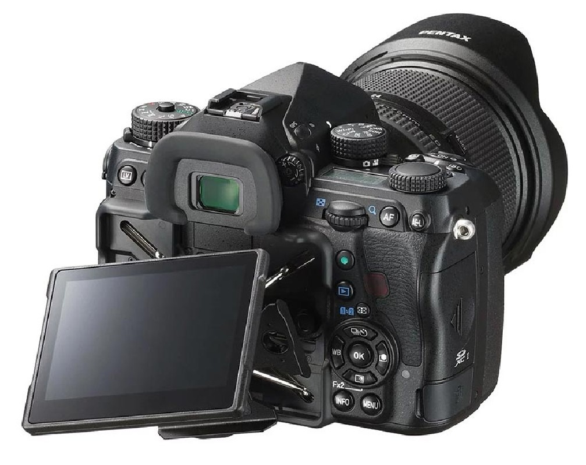
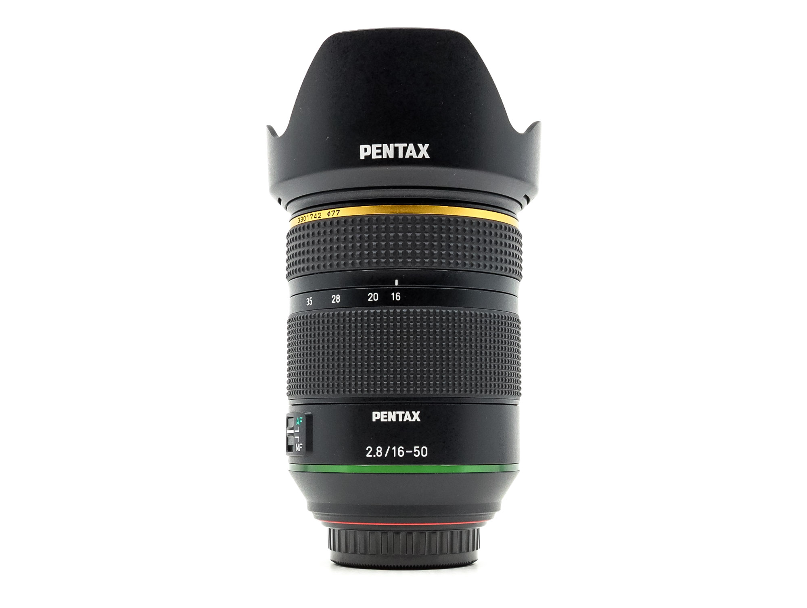
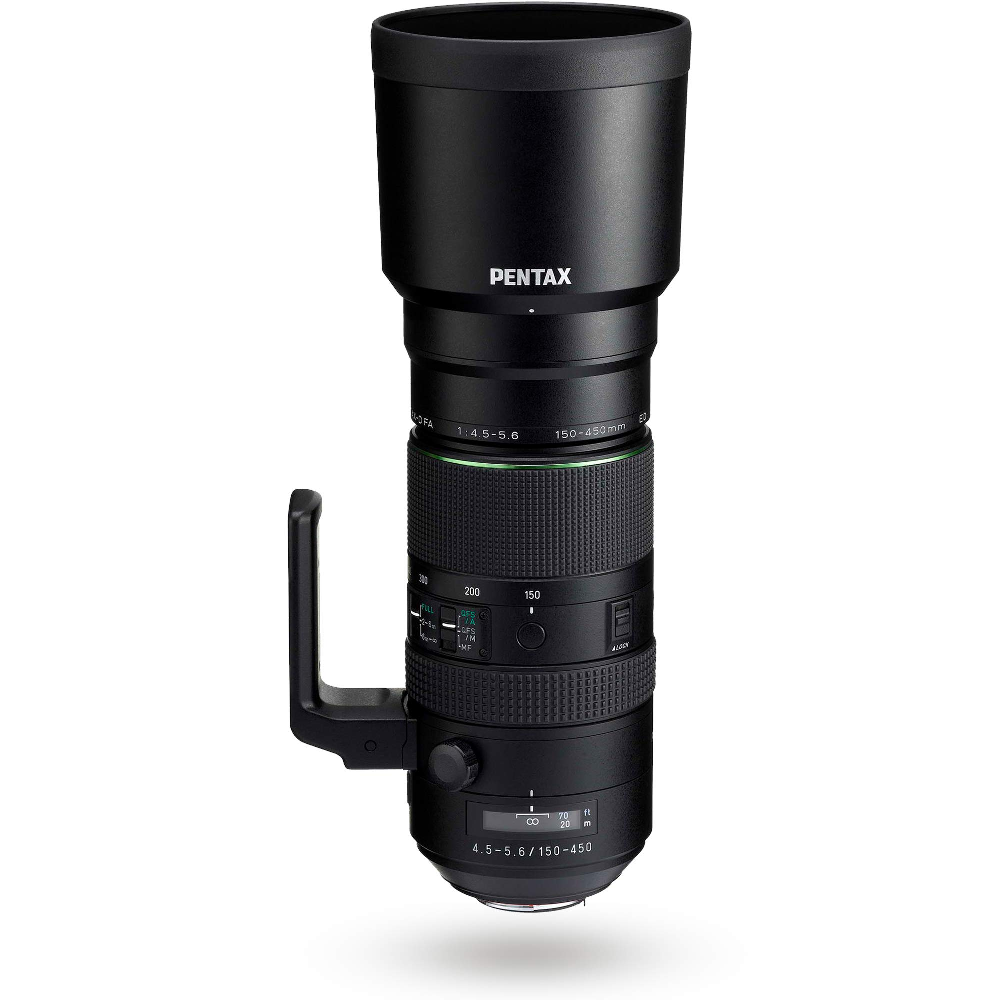

01 · CÁMARA
Pentax K-1 Mark II
El centro de mi equipo. Su sensor de formato completo y sus funciones específicas para fotografía nocturna me permiten trabajar con el cielo y el paisaje como partes de una misma imagen.
Herramientas para fotografiar el cielo
Mi equipo está formado por una cámara Pentax y dos objetivos que me permiten abordar distintas formas de astrofotografía: desde la Vía Láctea integrada en paisajes históricos hasta la Luna y los fenómenos astronómicos que requieren mayor alcance. Más allá de las características de cada elemento, valoro las herramientas que me permiten planificar, trabajar en el campo y concentrarme en la composición.

01 · CÁMARA
El centro de mi equipo. Su sensor de formato completo y sus funciones específicas para fotografía nocturna me permiten trabajar con el cielo y el paisaje como partes de una misma imagen.

02 · GRAN ANGULAR
El objetivo que utilizo habitualmente para fotografiar la Vía Láctea y los paisajes nocturnos. Su luminosidad permite captar el firmamento e integrarlo con ermitas, árboles, ruinas y otros elementos del entorno.

03 · TELEOBJETIVO
Para la Luna, los eclipses y los motivos que requieren mayor alcance. Su perspectiva permite aislar detalles y relacionar objetos astronómicos con puntos concretos del paisaje.
Astrofotografía desde la cámara
Seguir el movimiento aparente de las estrellas sin añadir necesariamente una montura de seguimiento externa.
La Pentax K-1 Mark II incorpora ASTROTRACER, un sistema que utiliza los datos de orientación de la cámara para desplazar el sensor y compensar el movimiento aparente de las estrellas durante la exposición.
En determinadas fotografías permite utilizar exposiciones más largas y mantener las estrellas puntuales sin recurrir a una montura ecuatorial motorizada adicional. Esto puede simplificar el equipo que llevo a localizaciones oscuras y alejadas.
El resultado depende de factores como la focal, el tiempo de exposición, la orientación y las condiciones de la toma. No es un sustituto universal de una montura de seguimiento, pero sí una herramienta muy útil para explorar la fotografía del cielo con una configuración más sencilla.
Enfoque nocturno
Una ayuda para resolver uno de los desafíos habituales de la astrofotografía: enfocar con precisión cuando apenas hay luz.
La función Star AF, disponible a través de la función adicional Astrophoto Assist para la Pentax K-1 Mark II, está diseñada para facilitar el enfoque automático sobre las estrellas.
Es especialmente interesante en sesiones nocturnas en las que el enfoque manual puede resultar complicado. Poder comprobar el enfoque antes de comenzar una secuencia ayuda a trabajar con mayor confianza y a dedicar más atención a la composición.
Su funcionamiento depende de la configuración, del objetivo compatible y de las condiciones en las que se detectan las estrellas. Por eso conviene comprobar la función disponible en la cámara y en el firmware instalado.
Más allá del equipo
La cámara y los objetivos son solo una parte del proceso. La planificación, la elección del lugar, la posición de la Vía Láctea y el momento de la noche son igual de importantes para crear una imagen en la que el paisaje y el firmamento compartan protagonismo.